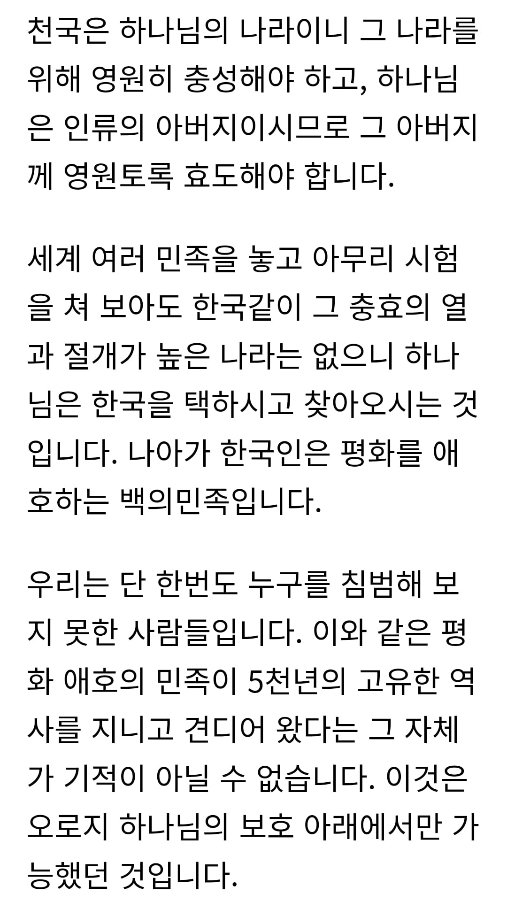
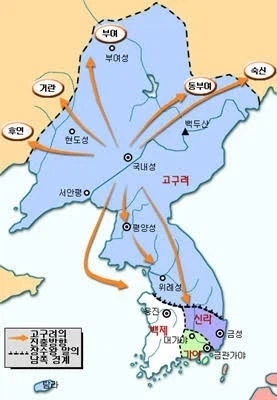
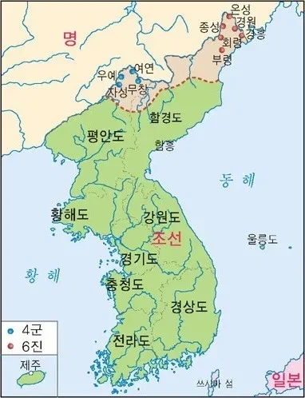

광개토대왕 시절

세종대왕 시절


광개토대왕 시절

세종대왕 시절
그러게 곡식 위치이동 한건데 애들이 억까하네
아 나중에 갚는다고ㅋㅋㅋㅋㅋㅋㅋ
맞아 심지어 농사 잘되라고 제사까지 지냈다고
이게 진짜 문화충격이었음
지네 농사 잘되라는 게 아니라 긴빠이 할 국가 농사 잘되라고 제사까지 지낸게 진짜 ㅅㅂㅋㅋㅋㅋㅋㅋㅋㅋㅋ
ㅋㅋㅋㅋㅋㅋ아 맞네
유대인놈들 민족신앙을 왜 한국인이 따르나
기독교는 민족신앙이 아닌데
원본인 유대교 입장에서 기독교는 알페스 같은 거
근데 그게 노벨문학상을 수상해버린
교회 따라가서 들은적잇는데 뭐 환웅도 하늘에서 왓으니까 우리 민족도 하느님의 자식이다 뭐 이런식으로 가르치던데
한민족이 유대 숨겨진 13지파 ㅇㅈㄹ 하는 책도 있더라 ㅋㅋ
저건 침략이 아니라 원래 내땅을 수복하는것
당장에 조선 망할 때도 열심히 만주에서 깽판치고 있었음
고종이 내탕금이 많아 그걸로 신식 따발총 이거저거 사서
만주에서 청나라 뚜까 패면서 만주에 사는 조선인들 괴롭힘
이거 때문에 청나라도 놀라고 일본도 놀라고...
여튼 사람도 입체적인데 국가는 얼마나 입체적이겠음
저거 말고도 고려때 만주 침공한거랑 대한제국 고종때 만주 침공한것도 있지
어허. 고구려 광개토 대왕의 정복은 정복이 아니라 환국시절 영토 수복활동이다!
조선이 얼마나 틈만 나면 여진족 족쳤는지 알면 저 말 못함 ㅋㅋㅋㅋ 임진왜란 끝나고 나서 그 정예병력이 여유가 생기자 가장 먼저 한 일이 북쪽으로 가 여진족을 말 그대로 학살 해버린거임
기록으로 보면 집 수천채 불태우고 1만여명 여진족 죽이고 보는 앞에서 곡식을 불태워버림.
신라구 모리나?
그래서 지구 나이 매쌀이고?
고려구도 중국에서 유명했음.
여진족도 집착증환자 만큼 조사하고 조지고 그랬지.
수시로 가서 초토화도 시킴
평화로운 민족(반쪽은 핵가지고 전세계를 위협중)
세종 묘호에는 정복군주 의미도 있다구ㅋㅋㅋㅋ
여진좆집 모르나 마
ㅈ빠지게 싸운 선조들 : 💀💀
한반도에 세워진 그 많은 나라들..을 보면 침략을 안했다는 말이 나오나..
한반도에서 일어난거는 노카운트인가?
능지 수준
여진족들이 약탈 존나하긴 했는데..
우리나라 : 대한민국 한정
광개토대왕은 영토를 가위바위보해서 넓혔음?
아 고구려는 침략 아니라고… 그저 옆동네에 농사 잘됐다해서 좀 가지러 간거임